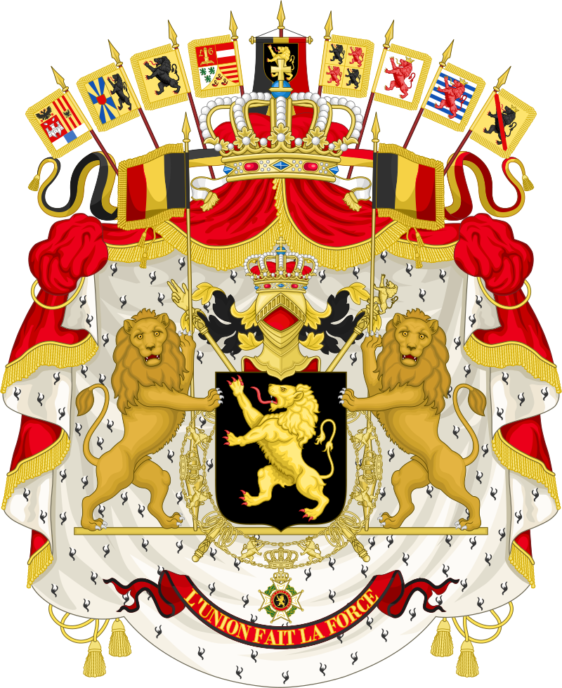
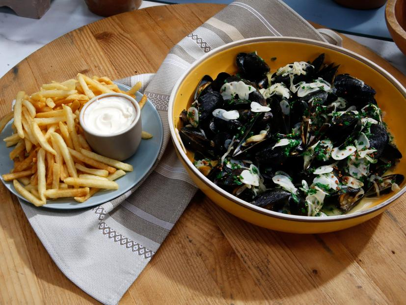

Moules Frites


A mussel dish that includes french fries and white wine. It's also the national dish of Belgium, and symbolizes the high amount of mussels consumed in Belgium each year!
Ingredients
- Extra-Virgin Olive Oil: 1/4 cup
- Shallots, finely sliced: 1/2 cup
- Garlic, thinly sliced: 5 tablespoons
- White Wine: 1 cup
- Mussels, cleaned and beards removed: 2 Ibs
- Creme Fraiche: 1/2 cup
- Flat-Leaf Parsley, minced: 1/3 cup
- Butter, unsalted: 2 tablespoons
- Chives, minced: 2 tablespoons
- Whole-Grain Mustard: 2 tablespoons
- French Fries, for serving
- Salt, to season
- Pepper, to season
Steps
- In a large Dutch oven or straight-sided 12-inch saute pan, heat the olive oil over medium heat. Add the shallots and garlic and cook until softened, about 2 minutes.
- Add the white wine and bring to a boil. Season with salt and pepper.
- Add the mussels, cover and steam until open, about 3 minutes. Using a slotted spoon, transfer the mussels to a large serving bowl.
- Add the creme fraiche, parsley, butter, chives and mustard to the remaining cooking liquid and bring just to a boil while stirring to combine. Pour the sauce over the mussels. Serve with French fries.
Source: Moules Frites
Source: Moules-Frites